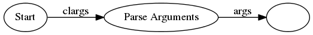
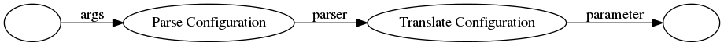
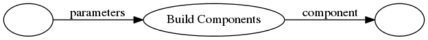
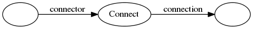
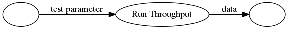
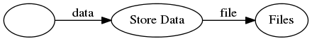
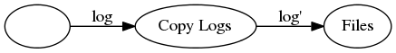

State View Translation of Use Case 1
- The system gets the configuration from the APE.

- The System translates the configuration to parameters

- The system builds Components baseed on the parameters.

- The system connects to the devices.

- The system runs throughput to the DUT.

- The data is saved to a file.

- The logs are copied to the data folder.
